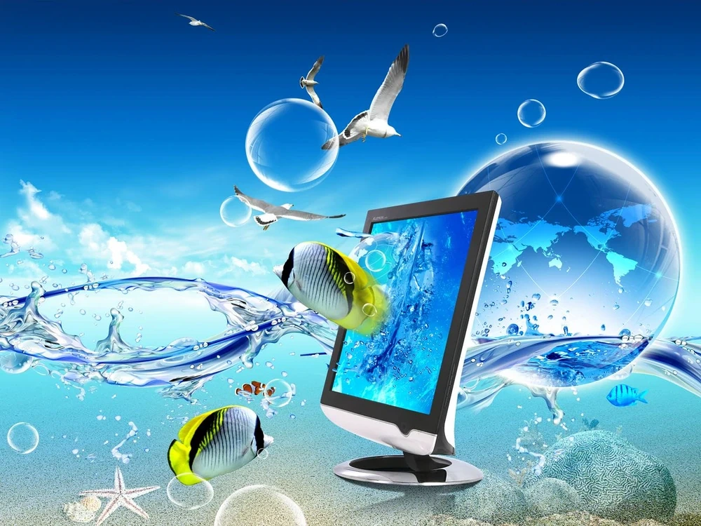

Co to Frutiger Aero?
Frutiger Aero, znany również jako Web 2.0 Gloss (często błędnie nazywany „Fruitiger Aero” lub „Fruitger Aero”), był popularnym stylem projektowym, który dominował w różnych dziedzinach – w tym w reklamie, mediach, obrazach stockowych i technologii – w przybliżeniu od 2004 do 2013 roku. Styl ten wyłonił się po estetyce Y2K i charakteryzuje się szerokim zastosowaniem skeumorfizmu, błyszczących tekstur, żywych palet kolorów (zwłaszcza zieleni i błękitów) oraz elementów inspirowanych naturą, takich jak zachmurzone niebo, tropikalne ryby, woda i bańki. W estetyce tej często pojawiają się także efekty flar soczewek, bokeh, abstrakcyjne wzory technologiczne, gradienty inspirowane zorzą polarną oraz częste użycie kroju pisma Frutiger.
Początkowo ten styl projektowy nie miał konkretnej nazwy i był bardziej kojarzony z poszczególnymi stylami (np. Windows Aero, skeumorficznymi ikonami iOS oraz oprawą wizualną gier takich jak Mirror's Edge i Spore) niż z szerszą kategorią estetyczną. W szczytowym okresie popularności niektórzy określali go mianem „Web 2.0 Gloss”, jednak termin ten odnosił się głównie do błyszczących elementów interfejsów, a nie do całej estetyki. Określenie „Frutiger Aero” zostało wprowadzone w 2017 roku przez Sofi Lee z Consumer Aesthetics Research Institute i zyskało dużą popularność w 2022 roku, co przyczyniło się do odrodzenia zainteresowania tą estetyką.
Frutiger Aero obejmuje różne pod-estetyki i estetyki pokrewne, takie jak Frutiger Metro, Technozen, Frutiger Eco oraz Helvetica Aqua Aero. Nazwa „Frutiger Aero” pochodzi od dwóch kluczowych inspiracji: kroju pisma Frutiger, stworzonego przez Adriana Frutigera i często wykorzystywanego w projektach w stylu Frutiger Aero, oraz interfejsu Windows Aero, wprowadzonego w systemach Windows Vista i Windows 7, który odegrał istotną rolę w popularyzacji błyszczącego, przezroczystego wyglądu charakterystycznego dla tej estetyki.